Un grand-père,
et des ingrédients simples devenus magiques
Le voyage culinaire de Deb commence dans le plus humble des décors : regarder son grand-père transformer les ingrédients du quotidien en repas dont on parle encore. Il l'apprend tôt : la cuisine n'est pas une recette. C'est une personne, un lieu, et une histoire racontée à la bonne température.
Cet instinct l'emmène à l'école hôtelière de Chennai, puis là où sa famille ne l'attendait pas : sur un plateau de télévision.
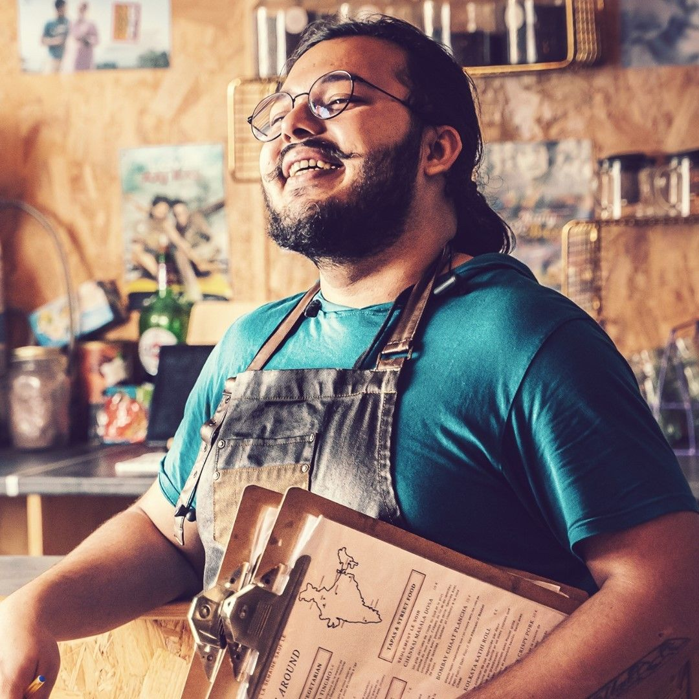
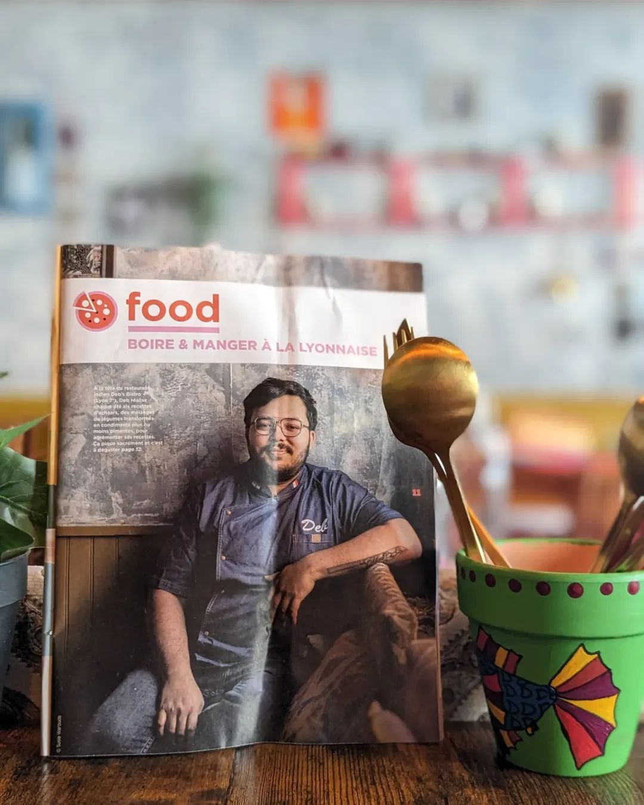
MasterChef India,
puis la maison Bocuse
MasterChef India le met sur la scène nationale. Mais le vrai virage arrive en 2016, à l'Institut Paul Bocuse : un master en innovation culinaire, des cuisines menées à la discipline française, et des mentors de la lignée d'Anne-Sophie Pic et de Paul Bocuse lui-même.
MasterChef India
La scène nationale, et la première preuve que sa cuisine sait raconter des histoires à des inconnus.
2016 · Institut Paul Bocuse, Lyon
Master en innovation culinaire et leadership. L'Inde apprend à parler français.
2019 · Ouverture de Deb's Bistro
26 Rue Lortet, Lyon 7e. Un bistro où chaque plat est une page d'un carnet de voyage indien.
Depuis
Des dîners pour le ministre indien des Affaires étrangères et le chef d'état-major des armées indien à Paris, des expositions culinaires à Saint-Tropez, une street food company à Paris, et une salle à Lyon qui se remplit d'habitués.
Chaque année, l'Inde.
Ville par ville, cuisine par cuisine.
Cette carte ne s'écrit pas à Lyon. Elle se collecte : cuisine tribale à Jamshedpur, étals de rue à Kolkata, repas sur feuille de bananier à Kochi, marchés aux épices de Delhi, dabbas de Bombay, plantations de Coorg. Le chef mange chez les fermiers, les cuisinières de famille et les vendeurs, apprend le plat là où il est né, et seulement ensuite le plat a le droit d'entrer à la carte.
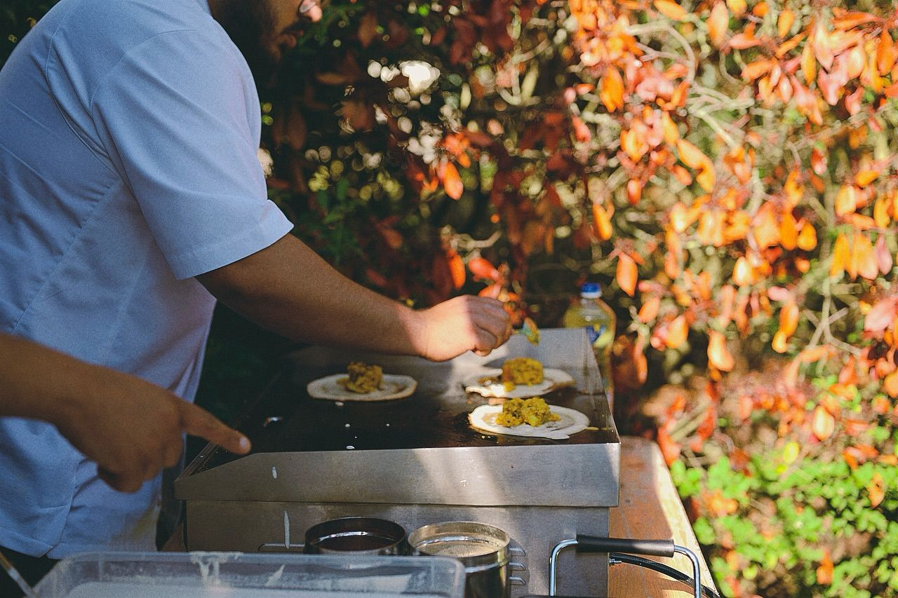
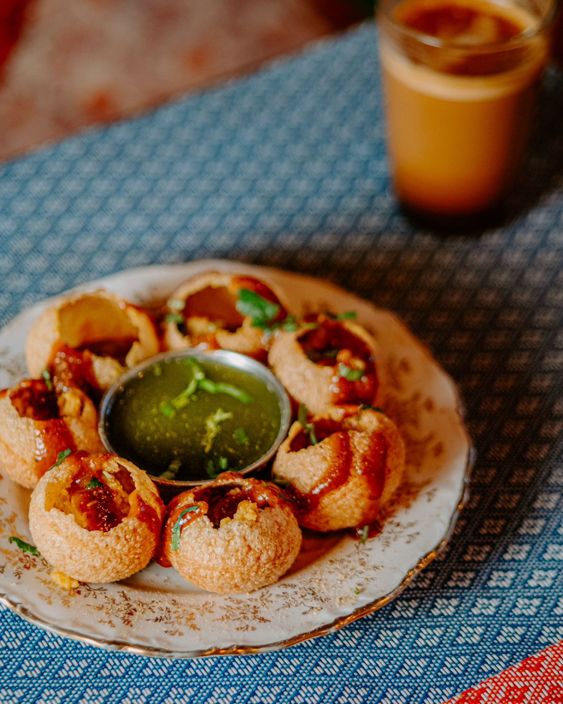
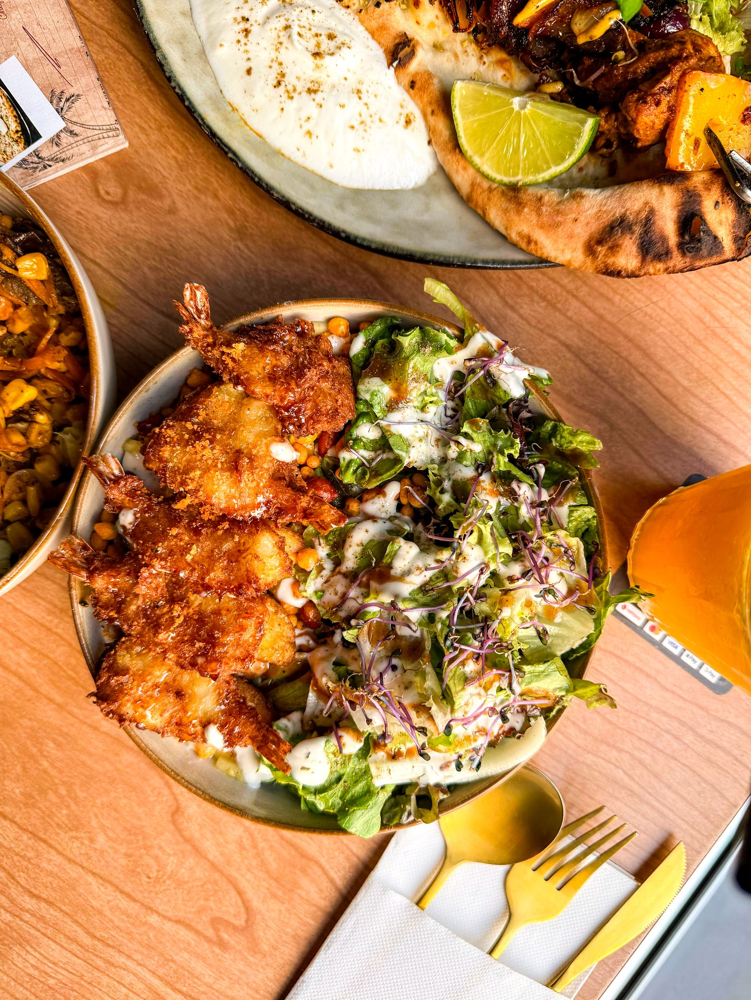
Une maison de Bombay vintage, dans une rue de Lyon
Des murs patinés, des tables en bois, de vieilles affiches de Bollywood, des étagères de bouteilles et de photos rapportées de la route. Rien ici n'a été dessiné dans un studio. Tout a été collecté, comme les recettes.
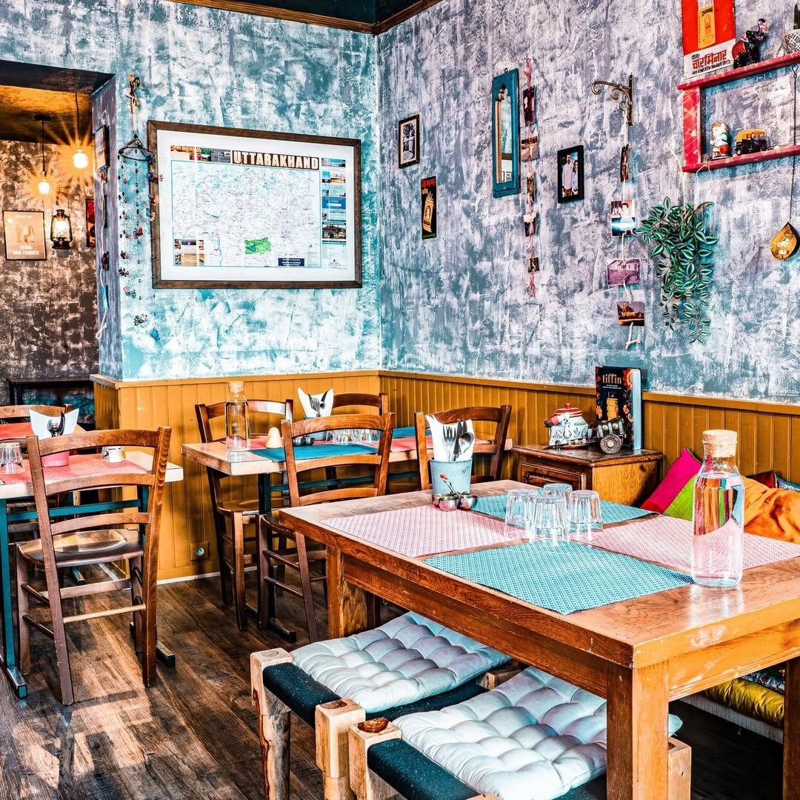
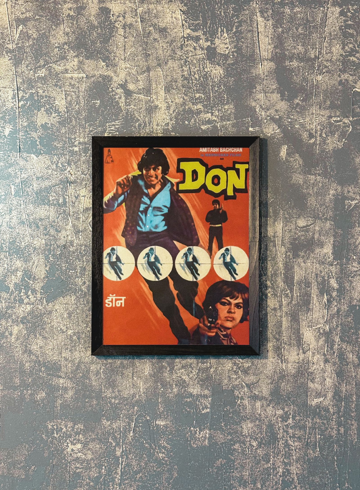
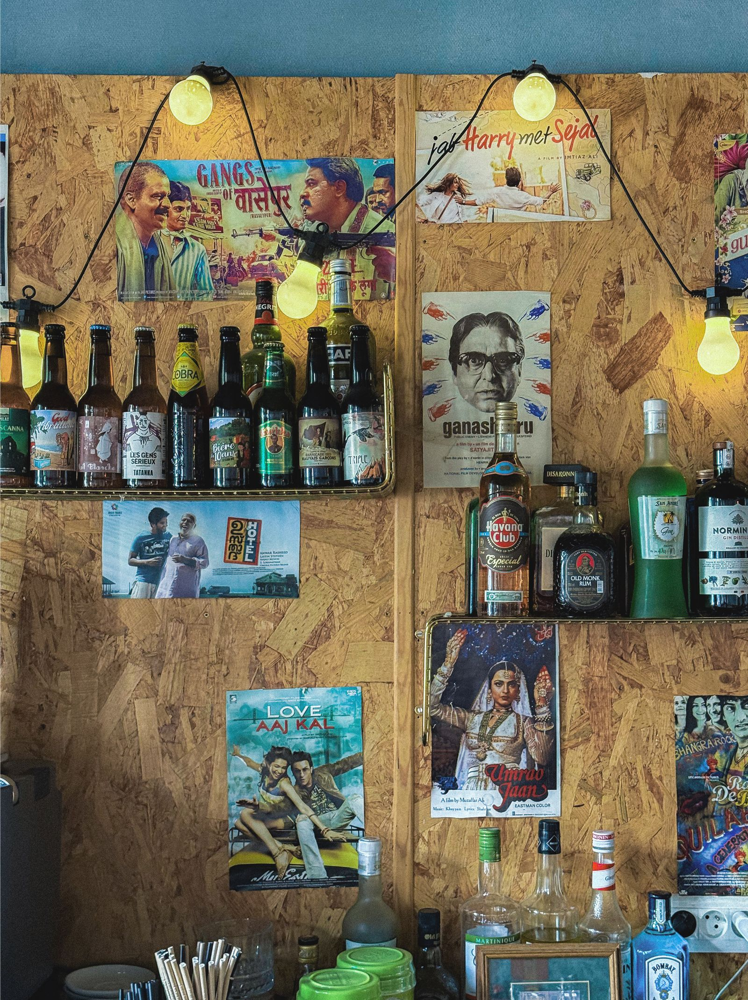
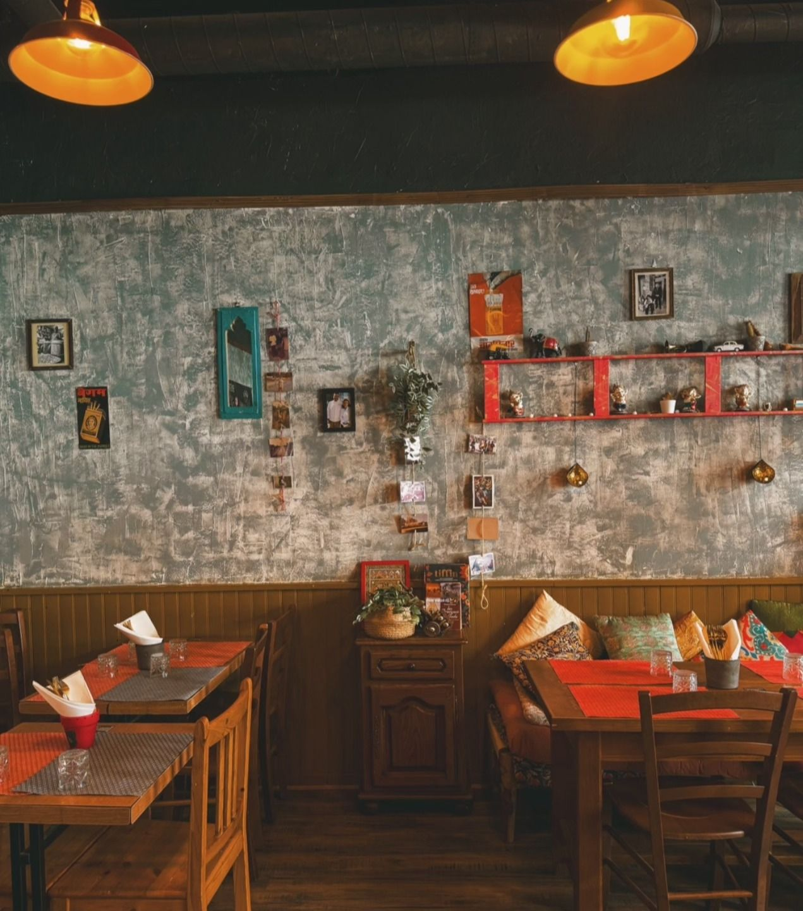
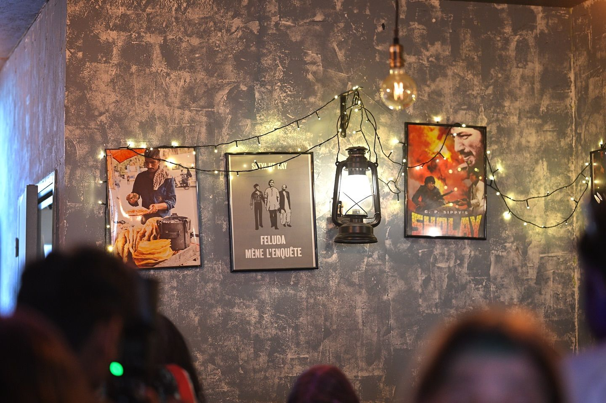
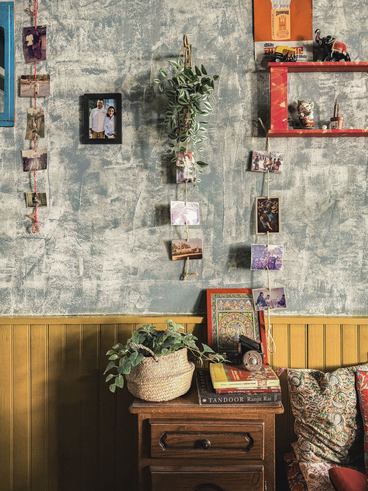

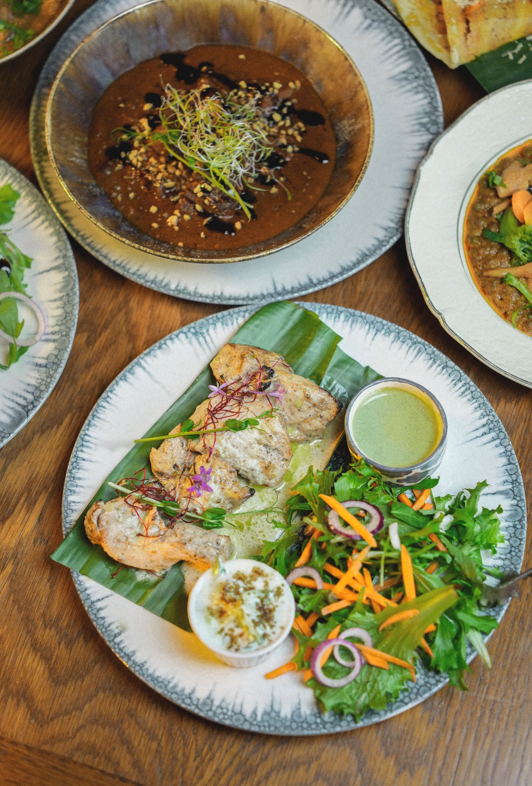
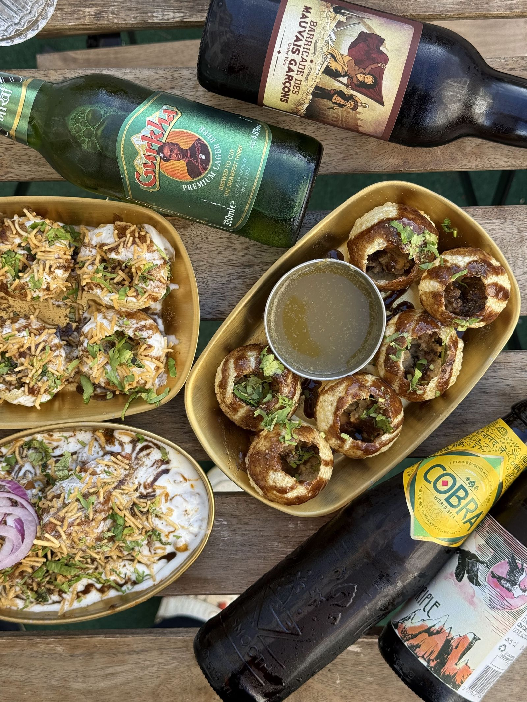
L'Inde en France.
Un jour, la France en Inde.
Deb's Bistro est la première page d'un livre plus long : amener les cuisines régionales de l'Inde en France avec le soin d'un bistro aujourd'hui, et porter l'idée bistronomique française vers l'Inde demain. Deux mondes, une table à la fois.